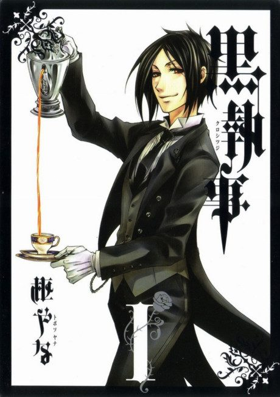

Anime

Manga2008 · Action, Comedy, Fantasy
Black Butler
黒執事
AniList7.2
Animeter—
5 seasons70 ep
MangaUnclear
Anime finished. Where does the manga pick up?
StatusNo source yet
We looked for where the anime ends in the manga but found no source we trust yet. The manga is still running.